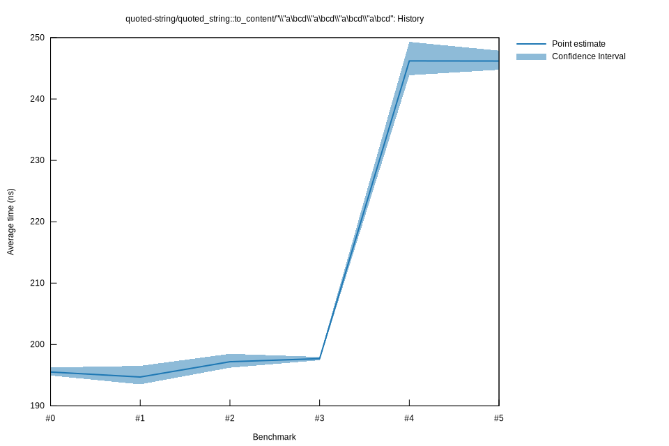

# 32025-10-14T15:36:48-07:00
|
Lower Bound |
Estimate |
Upper Bound |
| Value: |
197.44ns |
197.69ns |
197.97ns |
| Throughput: |
241.52MiB/s |
241.20MiB/s |
240.86MiB/s |
| Change in Value: |
-0.6848% |
+0.0432% |
+0.9536% |
| Change in Throughput: |
+0.6895% |
-0.0432% |
-0.9446% |
Change within noise threshold.
# 22025-10-05T14:44:24-07:00
|
Lower Bound |
Estimate |
Upper Bound |
| Value: |
196.22ns |
197.19ns |
198.48ns |
| Throughput: |
243.02MiB/s |
241.82MiB/s |
240.24MiB/s |
| Change in Value: |
-1.5440% |
+0.0579% |
+1.2309% |
| Change in Throughput: |
+1.5683% |
-0.0579% |
-1.2159% |
Change within noise threshold.
# 12025-10-05T13:03:01-07:00
|
Lower Bound |
Estimate |
Upper Bound |
| Value: |
193.50ns |
194.70ns |
196.52ns |
| Throughput: |
246.42MiB/s |
244.91MiB/s |
242.65MiB/s |
| Change in Value: |
-1.1559% |
+0.1254% |
+1.8792% |
| Change in Throughput: |
+1.1694% |
-0.1253% |
-1.8446% |
Change within noise threshold.
# 02025-10-05T13:00:55-07:00
|
Lower Bound |
Estimate |
Upper Bound |
| Value: |
194.94ns |
195.51ns |
196.25ns |
| Throughput: |
244.60MiB/s |
243.89MiB/s |
242.97MiB/s |